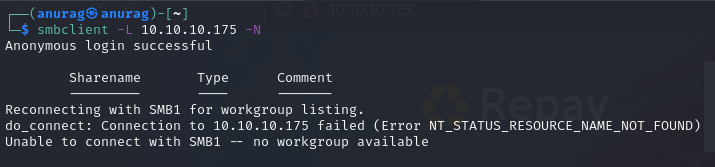
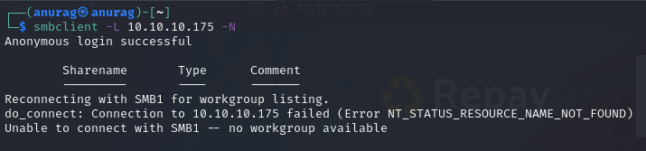

Port 445
SMB
Neither smbmap nor smbclient will allow me to list shares without a password:

RPC
I'll try to connect with null auth:

Looks like we do not have permission to view users and groups:

Neither smbmap nor smbclient will allow me to list shares without a password:

I'll try to connect with null auth:
Looks like we do not have permission to view users and groups: